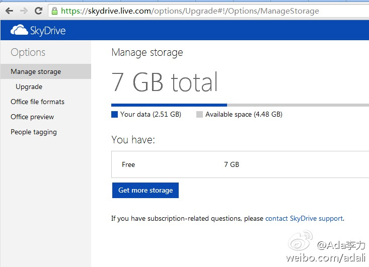

比如化妆品，是电视里明星代言的那种可信呢，还是身边朋友的推荐可信? 我更相信朋友的推荐，是因为朋友没有直接经济利益在里面，因而推荐是客观真实的。如果社区中设立推荐机制，需要切断直接利益输送，才能让推荐有效。美丽说等网站，上面分享图片的淘宝卖家越来越多，我已经不再去看了。

Ada李力
2012-08-15
Ada李力
2012-08-15
曾记得在微软的SkyDrive和DropBox之间选择了SkyDrive, 当时因为SkyDrive的免费存储达到25G, 而DropBox只有1G. 今天又登录了新版SkyDrive, 发现免费存储已经变成7G, 如果当年我把25G空间用满了，现在是不是要乖乖给微软交钱了呢？
- 